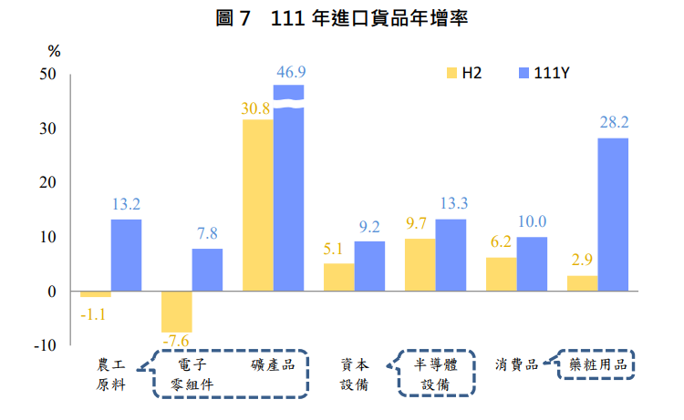

隨俄烏戰爭僵持、中國大陸實施清零防疫措施、通膨引發生活成本攀升，以及多數國家央行升息，逐漸抑制消費與企業支出，全球疫情後經濟復甦動能在去年下半年逐漸消退，世界貿易成長速度也大幅走緩。我國外貿與國際經濟情勢高度連動，111 年下半年出口表現明顯降溫，不過，受惠於新興科技應用與數位轉型商機蓬勃發展，國內半導體廠商積極擴充產能，以及原物料行情支撐，上半年出、進口大幅擴增， 因此想研究在如此情勢下的台灣貿易狀況。
出口主要貨品 111 年主要貨品上、下半年出口表現普遍呈先揚後抑，其中基本金屬 及其製品、機械、塑橡膠及其製品、化學品、電機產品及紡織品，下半 年均轉為負成長，光學器材跌勢延續且更加劇烈。全年而言，以礦產品 增逾6成最為強勁，電子零組件、資通與視聽產品、基本金屬及其製品、機械、化學品及運輸工具等 6 貨類，出口規模值則皆創歷年新高。
1. 電子零組件中積體電路出口大幅成長，其餘表現參差 雖然全球經濟籠罩在高通膨與升息壓力下，但受惠於新興科技應 用、車用電子、高效能運算與 5G 通訊商機之持續擴展，帶動 111 年電子 零組件出口突破 2,000 億美元，再締新高水準，年增 281 億美元(+16.4%)， 其中積體電路上半年因晶片供不應求及產品報價調升，年增30.5%，下半年因比較基期墊高與需求轉淡，僅增 8.2%，累計全年出口年增286億美元(+18.4%)；印刷電路隨消費性需求疲弱，下半年出口轉年減2.9%，全年增 4.4 億美元(+6.7%)；電容器及電阻器受中國大陸防疫政策影響，供應鏈上下游庫存問題難解，下半年出口轉為衰退23.1%，全年減 3.8億美元(-10.8%)；二極體(含 LED)市場需求不如預期，雖積極導入半導體及車載應用，效益仍待時間發酵，年減 4.8 億美元(-13.7%)。
2. 消費性電子產品買氣收縮，抑低資通與視聽產品出口動能 由於消費性電子產品買氣收縮，產業鏈上下游成品及電子元件庫存堆高，品牌大廠雖積極打消庫存，惟去化速度不盡理想，廠商新增訂單明顯下滑，受此影響，111 年上半年資通與視聽產品出口年增 11.7%，下半年僅微增 0.2%，其中第 4 季轉呈衰退1.5%，累計全年出口 647 億美元(+5.5%)，項下產品以電腦及其附屬單元增32億美元(+26.5%)表現最佳，電腦之零附件增19億美元(+10.9%)、交換器及路由器增17億美元 (+24.8%)，儲存媒體則減18億美元(-16.8%)。
3. 111 年上半年隨歐美逐步解封，以及俄烏戰爭爆發，國際原油價格漸 次走高，下半年受全球經濟成長趨緩及終端需求不佳影響，油價轉為震 盪走弱，以 OPEC 原油每桶均價觀察，111年6月底115.6美元，年底跌 至 81.3 美元，全年平均為 100.1 美元，較 110年上漲43.2%，受油價墊高支撐，年初塑、化原料報價順勢揚升，惟產品供給過剩且市場消費疲軟，之後價格大幅回落。111 年我國礦產品(主要為石油煉製品)出口劇增76億美元(+62.8%)，化學品、塑橡膠及其製品因下半年陷入衰退，各減15.3%、25.2%，累計全年分別年增0.3%及年減12.9%。
二、進口主要貨品及來源地區 111 年國際農工原料行情先盛後衰，反映於我國農工原料進口亦是上 半年大增3成，下半年轉呈小幅衰退；資本設備受惠於半導體先進製程研發及擴大產能需求，相關設備購置動能續強，年增9.2%；消費品進口增1成。
1.化石燃料進口劇增，推升農工原料進口值創新高 由於化石燃料進口劇增，雖下半年塑、化及基本金屬等原物料價格 多在低檔徘徊，加上終端消費減弱，半導體國際分工鏈亦顯疲態，農工 原料進口規模仍連續 2 年創高，111 年進口 3,001 億美元，年增 351 億美 元(+13.2%)，惟下半年年減 1.1%，其中礦產品全年增 269 億美元 (+46.9%)，為主要增長項目，電子零組件年增 72 億美元(+7.8%)，但下半 年衰退 7.6%，另基本金屬年減 3.4%、塑化原料減 0.2%。
2.半導體設備進口占資本設備近5成，對其增幅之貢獻達2/3近年來國際間半導體製造產業競爭益發激烈，各大廠積極購置設備，除投入先進製程開發外，並擴大產能搶占商機，111年我資本設備進口753 億美元，為歷年新高，年增 63 億美元(+9.2%)，其中半導體設備占比近5成，增43億美元(+13.3%)，對資本設備進口增幅(+9.2%)貢獻 6.2個百分點，另交通運輸設備增36.4%，主要係飛機及其零件進口增5.9億美元(+33.4%)。
3.小客車及手機因缺料及疫情影響，進口僅分別小幅增減消費品 111年進口480億美元，年增44億美元(+10.0%)，其中藥粧用品因疫情需求增21億美元(+28.2%)、食品增11.3億美元(+11.4%)、 小客車增 3.1 億美元(+5.1%)、成衣增 1.8億美元(+10.2%)，手機則減2.1億美元(-6.2%)。
